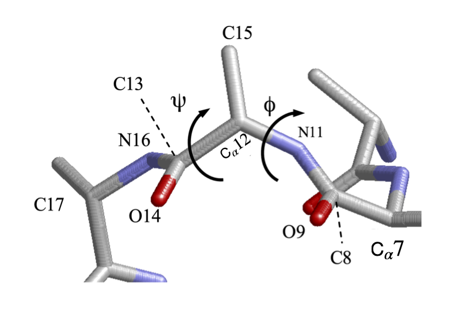
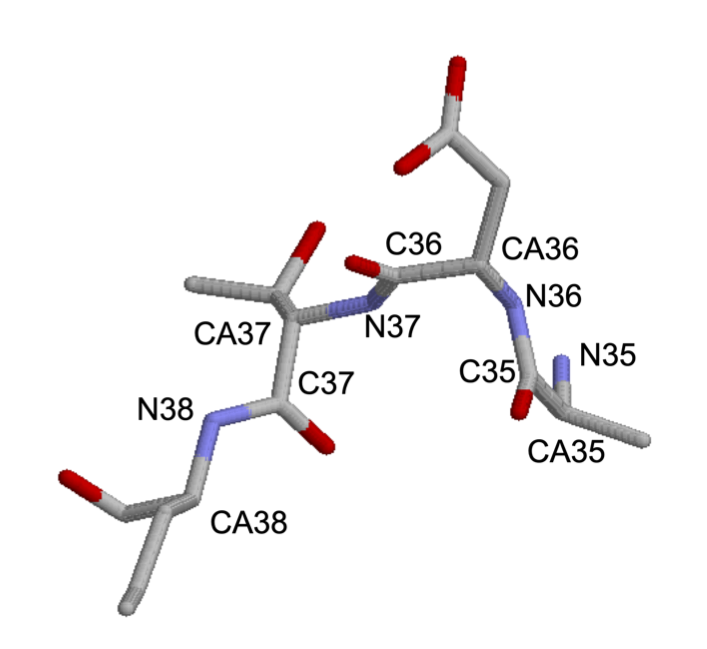
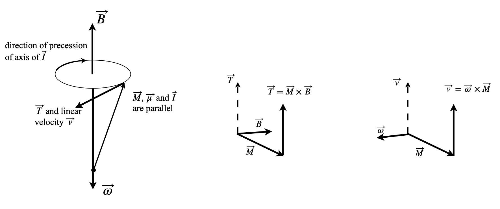

Questions 53 - 61
Q53 Normalise
Show that in normalizing equation (6.51) the unit vectors disappear.
Q54 Cyclohexane bond lengths
In the chair and boat form of cyclohexane \(\mathrm{C_6H_{12}}\) calculate;
(a) the coordinates of each of the atoms,
(b) the distance between the C\(_1\) and C\(_4\) atoms in both chair and boat forms.
Calculate the dihedral angle \(\psi\) between the following planes of cyclohexane.
(c) C1-C6-C2 and C2-C6-C5, which is the same in the chair or boat form.
(d) C1-C6-C2 and C1-C6-C5.
(e) C1-C6-C2 and C5-C4-C3 in the boat form.
Assume standard bond lengths \(d\) and sp\(^3\) tetrahedral bond angles \(\theta\). The bond vectors and axes are labelled in the diagram.
Strategy: (a-b) The C-C bonds are all the same length and the angles are also the same. The chair shaped molecule has a centre of symmetry and the boat has a mirror plane. Use vector notation in the x, y, z frame so that any vector representing a bond, is \(a\boldsymbol i + b\boldsymbol j + c\boldsymbol k\) with coefficients \(a, b, c\) which must be determined for each vector. Choose a right-angled axes set with the origin at the centre of inversion. The most difficult part of this problem is determining the coordinates of the atoms. The tetrahedral bond angles are given by \(\cos(\theta) = -1/3\) with \(\theta\) in radians, equivalent to \(109.47^\text{o}\). All the bond lengths are \(d\). (c-e) Dihedral or torsion angles are the angles between planes. The dihedral angle is given by equation (6.54). If the vectors \(\vec n\) and \(\vec m\) are normal to the two planes, the cross and dot product should have the order \(\vec m\cdot\vec n = (d_1 \times d_2)\cdot(d_2 \times d_5)\). The vectors are all defined to be in the same direction as shown on the figure.
Q55 Torsion angles in a protein
Figure 47 shows just the C, N, and O atoms of part of a peptide backbone from pdb entry 1VCR and some of the coordinates are listed below. Calculate the torsion angles \(\psi\) and \(\phi\) using Python to do so. Write a general procedure that accepts the four atoms coordinates as input. Does this part of the backbone forms an \(\alpha\)-helix or \(\beta\)-sheet?
Strategy: The first step is to determine which atoms are involved and this means consulting figure 39. The torsion \(\psi\) belongs to the atoms including and between the N atoms, and is group \(\mathrm{N_{11}-C_{12}-C_{13}-N_{16}}\). The angle \(\phi\) starts and ends at the C=O groups and is grouping \(\mathrm{C_8-N_{11}-C_{12}-C_{13} }\).
\[\begin{split}\displaystyle \Tiny\begin{array}\\
& & & & x & y & z\\
\hline
\text{ATOM } 8&\text{C }&\text{ GLU A}& 56 & 120.627 & 4.607 & 38.990 & 1.00296.52 & C\\
\text{ATOM } 9&\text{O }&\text{ GLU A}& 56 & 119.838 & 4.104 & 38.191 & 1.00296.52 & O\\
\text{ATOM }10&\text{CB }&\text{ GLU A}& 56 & 122.694 & 3.628 & 38.000 & 1.00296.52 & C\\
\text{ATOM }11&\text{N }&\text{ THR A}& 57 & 120.292 & 4.951 & 40.228 & 1.00296.52 & N\\
\text{ATOM }12&\text{CA }&\text{ THR A}& 57 & 118.955 & 4.753 & 40.750 & 1.00296.52 & C\\
\text{ATOM }13&\text{C }&\text{ THR A}& 57 & 117.996 & 5.868 & 40.333 & 1.00296.52 & C\\
\text{ATOM }14&\text{O }&\text{ THR A}& 57 & 117.192 & 5.699 & 39.415 & 1.00296.52 & O\\
\text{ATOM }15&\text{CB }&\text{ THR A}& 57 & 119.013 & 4.640 & 42.275 & 1.00296.52 & C\\
\text{ATOM }16&\text{N }&\text{ PHE A}& 58 & 118.093 & 7.008 & 41.010 & 1.00296.52 & N\\
\text{ATOM }17&\text{CA }&\text{ PHE A}& 58 & 117.229 & 8.153 & 40.736 & 1.00296.52 & C\\
\text{ATOM }18&\text{C }&\text{ PHE A}& 58 & 117.620 & 8.930 & 39.485 & 1.00296.52 & C\\
\text{ATOM }19&\text{O }&\text{ PHE A}& 58 & 116.760 & 9.339 & 38.702 & 1.00296.52 & O\\
\hline \end{array}\end{split}\]

Figure 47. Part of the peptide backbone.
Q56 Angles in a protein
Triose phosphate (pdb 1TIM) has been studied by X-ray crystallography and has a \(\beta\)-barrel structure.
(a) Find the first \(\psi\) torsion angle of the part of the \(\beta\)-sheet part of the structure shown, starting from N\(_{36}\). Do this semi-automatically by searching along the data until you find the atoms you want. Look at Figure 39 to decide which type of atoms to use for each angle.
(b) Calculate the remainder of the \(\psi\)angles, then modify the python code to calculate the \(\phi\) angles.
Strategy: Use the procedure developed in the previous problem, or your own version of it.
You may want to read the data into Python after extracting this part of the data from the 1TIM.pdb file.
The \(x, y, z\) values are then elements 7, 8, and 9 of each row of the matrix. You will have to put the data into the folder from which you are starting a Python worksheet, otherwise the full path starting at C:/ etc. will have to be used.
\[\begin{split}\displaystyle \Tiny\begin{array}\\
&&&& x & y & z \\
\hline
\text{ATOM }2128&\text{ CB }&\text{SER B}& 34 & 50.330& 75.964& -10.921& 1.00 &0.00 & 1TIM2273\\
\text{ATOM }2129&\text{ OG }&\text{SER B}& 34 & 49.244& 75.039& -10.804& 1.00 &0.00 & 1TIM2274\\
\text{ATOM }2130&\text{ N }&\text{ALA B}& 35 & 52.355& 75.699& -8.836& 1.00 &0.00 & 1TIM2275\\
\text{ATOM }2131&\text{ CA }&\text{ALA B}& 35 & 52.796& 75.402& -7.466& 1.00 &0.00 & 1TIM2276\\
\text{ATOM }2132&\text{ C }&\text{ALA B}& 35 & 51.779& 75.906& -6.429& 1.00 &0.00 & 1TIM2277\\
\text{ATOM }2133&\text{ O }&\text{ALA B}& 35 & 51.910& 75.645& -5.232& 1.00 &0.00 & 1TIM2278\\
\text{ATOM }2134&\text{ CB }&\text{ALA B}& 35 & 54.179& 76.024& -7.200& 1.00 &0.00 & 1TIM2279\\
\text{ATOM }2135&\text{ N }&\text{ASP B}& 36 & 50.780& 76.625& -6.939& 1.00 &0.00 & 1TIM2280\\
\text{ATOM }2136&\text{ CA }&\text{ASP B}& 36 & 49.728& 77.116& -6.027& 1.00 &0.00 & 1TIM2281\\
\text{ATOM }2137&\text{ C }&\text{ASP B}& 36 & 48.681& 75.986& -5.894& 1.00 &0.00 & 1TIM2282\\
\text{ATOM }2138&\text{ O }&\text{ASP B}& 36 & 47.846& 76.003& -4.993& 1.00 &0.00 & 1TIM2283\\
\text{ATOM }2139&\text{ CB }&\text{ASP B}& 36 & 49.144& 78.437& -6.534& 1.00 &0.00 & 1TIM2284\\
\text{ATOM }2140&\text{ CG }&\text{ASP B}& 36 & 47.765& 78.743& -5.929& 1.00 &0.00 & 1TIM2285\\
\text{ATOM }2141&\text{ OD1 }&\text{ASP B}& 36 & 47.140& 79.720& -6.427& 1.00 &0.00 & 1TIM2286\\
\text{ATOM }2142&\text{ OD2 }&\text{ASP B}& 36 & 47.390& 77.990& -4.991& 1.00 &0.00 & 1TIM2287\\
\text{ATOM }2143&\text{ N }&\text{THR B}& 37 & 48.800& 75.039& -6.817& 1.00 &0.00 & 1TIM2288\\
\text{ATOM }2144&\text{ CA }&\text{THR B}& 37 & 47.914& 73.870& -6.899& 1.00 &0.00 & 1TIM2289\\
\text{ATOM }2145&\text{ C }&\text{THR B}& 37 & 48.627& 72.644& -6.271& 1.00 &0.00 & 1TIM2290\\
\text{ATOM }2146&\text{ O }&\text{THR B}& 37 & 49.830& 72.468& -6.467& 1.00 &0.00 & 1TIM2291\\
\text{ATOM }2147&\text{ CB }&\text{THR B}& 37 & 47.634& 73.522& -8.376& 1.00 &0.00 & 1TIM2292\\
\hline\end{array}\end{split}\]

Figure 48. Small part of Triose phosphate 1TIM.pdb.
Q57 Sugar phosphate in DNA
The following data is that for ideal A type DNA, should such a molecule exist.
(a) Confirm that the data is consistent with A type DNA.
(b) Check the conformation by calculating the distance of the \(\mathrm{C'_3}\) and \(\mathrm{C'_2}\) atoms from the plane of \(\mathrm{C'_4-O'_4-C'_1}\) atoms.
\[\begin{split}\displaystyle \Tiny\begin{array}\\
&&&& x & y & z\\
\hline
\text{ATOM } 20&\text{ P }&\text{G A}& 2 & 6.900 & 5.093& -6.694& 1.00‡ 25.00\\
\text{ATOM } 21&\text{ O1P }&\text{G A}& 2 & 5.428 & 4.956& -6.641& 1.00‡ 25.00\\
\text{ATOM } 22&\text{ O2P }&\text{G A}& 2 & 7.451 & 5.729& -7.911& 1.00‡ 25.00\\
\text{ATOM } 23&\text{ O5* }&\text{G A}& 2 & 7.581 & 3.662& -6.483& 1.00‡ 25.00\\
\text{ATOM } 24&\text{ C5* }&\text{G A}& 2 & 8.989 & 3.594& -6.187& 1.00‡ 25.00\\
\text{ATOM } 25&\text{ C4* }&\text{G A}& 2 & 9.378 & 2.172& -5.835& 1.00‡ 25.00\\
\text{ATOM } 26&\text{ O3* }&\text{G A}& 2 & 9.415 & 0.945& -7.948& 1.00‡ 25.00\\
\text{ATOM } 27&\text{ C3* }&\text{G A}& 2 & 8.751 & 1.078& -6.697& 1.00‡ 25.00\\
\text{ATOM } 28&\text{ C2* }&\text{G A}& 2 & 8.902 & -0.134& -5.779& 1.00‡ 25.00\\
\text{ATOM } 29&\text{ C1* }&\text{G A}& 2 & 8.500 & 0.483& -4.443& 1.00‡ 25.00\\
\text{ATOM } 30&\text{ O4* }&\text{G A}& 2 & 8.917 & 1.839& -4.493& 1.00‡ 25.00\\
\text{ATOM } 31&\text{ N9 }&\text{G A}& 2 & 7.034 & 0.441& -4.182& 1.00‡ 25.00\\
\hline\end{array}\end{split}\]
Q58 Zinc finger protein
Figure 49 shows part of the DNA found with the zinc finger protein (PDB entry 1AAY).
(a) What base is shown in Figure 49 and is this a purine or pyrimidine base?
(b) Calculate the ring pucker \(v_2\), and \(\gamma\) and \(\chi\) torsion angles.
(c) What type of DNA is this?
Strategy: First, identify the atoms about which the angles are to be calculated; the sugar atoms are starred so this is easy! By definition, (see Section 21), the \(\chi\) torsion angle is between N\(_9\) and C\(_4\) in this type of base.
The .pdb coordinates for the top sugar and base in the picture are
\[\begin{split}\displaystyle \Tiny\begin{array}\\
&&&& x & y & z\\
\hline
\text{ATOM } 837&\text{ P }&\text{ G B}& 6 & 5.282 & 8.838 & 56.055 & 1.00& 36.20 & DNA1 P\\
\text{ATOM } 838&\text{ O1P }&\text{ G B}& 6 & 6.249 & 8.553 & 57.139 & 1.00& 35.84 & DNA1 O\\
\text{ATOM } 839&\text{ O2P }&\text{ G B}& 6 & 4.927 & 7.788 & 55.059 & 1.00& 35.58 & DNA1 O\\
\text{ATOM } 840&\text{ O5* }&\text{ G B}& 6 & 3.903 & 9.424 & 56.660 & 1.00& 32.80 & DNA1 O\\
\text{ATOM } 841&\text{ C5* }&\text{ G B}& 6 & 3.829 & 10.592 & 57.472 & 1.00& 28.09 & DNA1 C\\
\text{ATOM } 842&\text{ C4* }&\text{ G B}& 6 & 2.610 & 11.430 & 57.099 & 1.00& 27.15 & DNA1 C\\
\text{ATOM } 843&\text{ O4* }&\text{ G B}& 6 & 2.772 & 12.046 & 55.805 & 1.00& 25.05 & DNA1 O\\
\text{ATOM } 844&\text{ C3* }&\text{ G B}& 6 & 1.382 & 10.524 & 57.025 & 1.00& 28.06 & DNA1 C\\
\text{ATOM } 845&\text{ O3* }&\text{ G B}& 6 & 0.315 & 11.094 & 57.776 & 1.00& 30.82 & DNA1 O\\
\text{ATOM } 846&\text{ C2* }&\text{ G B}& 6 & 1.034 & 10.517 & 55.563 & 1.00& 26.27 & DNA1 C\\
\text{ATOM } 847&\text{ C1* }&\text{ G B}& 6 & 1.598 & 11.813 & 55.022 & 1.00& 25.13 & DNA1 C\\
\text{ATOM } 848&\text{ N9 }&\text{ G B}& 6 & 1.981 & 11.653 & 53.605 & 1.00& 23.54 & DNA1 N\\
\text{ATOM } 849&\text{ C8 }&\text{ G B}& 6 & 2.908 & 10.792 & 53.071 & 1.00& 23.68 & DNA1 C\\
\text{ATOM } 850&\text{ N7 }&\text{ G B}& 6 & 3.051 & 10.912 & 51.784 & 1.00& 23.73 & DNA1 N\\
\text{ATOM } 851&\text{ C5 }&\text{ G B}& 6 & 2.155 & 11.922 & 51.440 & 1.00& 22.27 & DNA1 C\\
\text{ATOM } 852&\text{ C6 }&\text{ G B}& 6 & 1.874 & 12.481 & 50.170 & 1.00& 20.87 & DNA1 C\\
\text{ATOM } 853&\text{ O6 }&\text{ G B}& 6 & 2.415 & 12.213 & 49.105 & 1.00& 19.80 & DNA1 O\\
\text{ATOM } 854&\text{ N1 }&\text{ G B}& 6 & 0.895 & 13.472 & 50.251 & 1.00& 21.65 & DNA1 N\\
\text{ATOM } 855&\text{ C2 }&\text{ G B}& 6 & 0.275 & 13.875 & 51.422 & 1.00& 21.79 & DNA1 C\\
\text{ATOM } 856&\text{ N2 }&\text{ G B}& 6 & -0.637 & 14.838 & 51.323 & 1.00& 22.30 & DNA1 N\\
\text{ATOM } 857&\text{ N3 }&\text{ G B}& 6 & 0.551 & 13.346 & 52.614 & 1.00& 20.28 & DNA1 N\\
\text{ATOM } 858&\text{ C4 }&\text{ G B}& 6 & 1.493 & 12.380 & 52.547 & 1.00& 21.68 & DNA1 C\\
\text{ATOM } 859&\text{ P }&\text{ G B}& 7 & -1.054 & 10.303 & 58.105 & 1.00& 31.62 & DNA1 P\\
\hline\end{array}\end{split}\]
Q59 Cross product
The differential of a cross product is \(\displaystyle \frac{d}{dt}(\vec A \times \vec B)=\vec A \times \frac{d\vec B}{dt}+\frac{d\vec A}{dt}\times \vec B\). Calculate \(d\vec L/dt\) if \(\displaystyle \vec L=m\vec v \times \frac{d\vec r}{dt}\).
Q60 Centripetal acceleration
A particle with orbital motion has a centripetal acceleration of \(\vec a = \vec \omega\times (\vec \omega \times \vec r)\), where \(\vec \omega\) is angular velocity and \(\vec r\) a positional vector. Find \(|\vec a|\) if the motion is in a circle where \(\vec r\) and \(\vec \omega\) are perpendicular.
Q61 Rotating disc
Derive the equation for the linear velocity of a disc, and by inference any rigid body, using the \((i, j, k)\) basis set of vectors. Although these are fixed in space they may be used by allowing the amplitude of the vector’s components to change with rate \(\alpha\) which is also the magnitude of the angular velocity \(\vec \omega\),
\[\displaystyle \vec r(t) = \vec r\cos(\alpha t)\;\boldsymbol i + \vec r\sin(\alpha t)\;\boldsymbol j\]
Calculate the cross product \(\vec \omega \times\vec r\) and the position vector \(\vec r\). Next, differentiate \(\vec r\) to obtain the linear velocity \(\vec \upsilon\) and equate the two equations. Figure 55 shows the definition of vectors. Let \(r\) be the magnitude of vector \(\vec r\).

Figure 55 Angular velocity \(\vec \omega\), linear velocity \(\vec \upsilon\) of a disc of radius \(r\) with radius vector \(\vec r\).